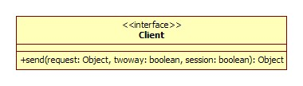
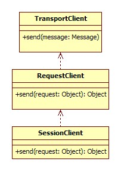

谈谈扩充式扩展与增量式扩展
http://javatar.iteye.com/blog/690845
我们平台的产品越来越多，产品的功能也越来越多。平台的产品为了适应各 BU 和部门以及产品线的需求，势必会将很多不相干的功能凑在一起，客户可以选择性的使用。为了兼容更多的需求，每个产品，每个框架，都在不停的扩展，而我们经常会选择一些扩展的扩展方式，也就是将新旧功能扩展成一个通用实现。我想讨论是，有些情况下也可以考虑增量式的扩展方式，也就是保留原功能的简单性，新功能独立实现。我最近一直做分布式服务框架的开发，就拿我们项目中的问题开涮吧。
比如：远程调用框架，肯定少不了序列化功能，功能很简单，就是把流转成对象，对象转成流。但因有些地方可能会使用 osgi，这样序列化时，IO 所在的 ClassLoader 可能和业务方的 ClassLoader 是隔离的。需要将流转换成 byte[] 数组，然后传给业务方的 ClassLoader 进行序列化。为了适应 osgi 需求，把原来非 osgi 与 osgi 的场景扩展了一下，这样，不管是不是 osgi 环境，都先将流转成 byte[] 数组，拷贝一次。然而，大部分场景都用不上 osgi，却为 osgi 付出了代价。而如果采用增量式扩展方式，非 osgi 的代码原封不动，再加一个 osgi 的实现，要用 osgi 的时候，直接依赖 osgi 实现即可。
再比如：最开始，远程服务都是基于接口方法，进行透明化调用的。这样，扩展接口就是， invoke(Method method, Object[] args)，后来，有了无接口调用的需求，就是没有接口方法也能调用，并将 POJO 对象都转换成 Map 表示。因为 Method 对象是不能直接 new 出来的，我们不自觉选了一个扩展式扩展，把扩展接口改成了 invoke(String methodName, String[] parameterTypes, String returnTypes, Object[] args)，导致不管是不是无接口调用，都得把 parameterTypes 从 Class[] 转成 String[]。如果选用增量式扩展，应该是保持原有接口不变，增加一个 GeneralService 接口，里面有一个通用的 invoke() 方法，和其它正常业务上的接口一样的调用方式，扩展接口也不用变，只是 GeneralServiceImpl 的 invoke() 实现会将收到的调用转给目标接口，这样就能将新功能增量到旧功能上，并保持原来结构的简单性。
再再比如：无状态消息发送，很简单，序列化一个对象发过去就行。后来有了同步消息发送需求，需要一个 Request/Response 进行配对，采用扩展式扩展，自然想到，无状态消息其实是一个没有 Response 的 Request，所以在 Request 里加一个 boolean 状态，表示要不要返回 Response。如果再来一个会话消息发送需求，那就再加一个 Session 交互，然后发现，原来同步消息发送是会话消息的一种特殊情况，所有场景都传 Session，不需要 Session 的地方无视即可。

如果采用增量式扩展，无状态消息发送原封不动，同步消息发送，在无状态消息基础上加一个 Request/Response 处理，会话消息发送，再加一个 SessionRequest/SessionResponse 处理。
